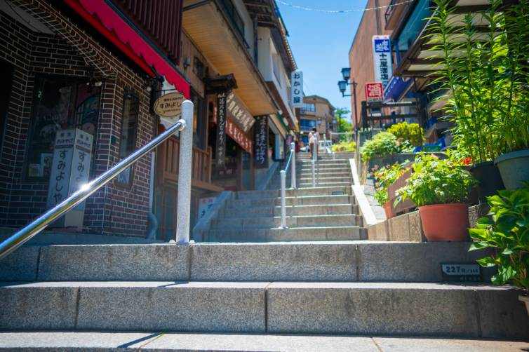

水澤亭について
上州水沢は、石段の街伊香保温泉の南東に位置し、
坂東十六番札所水沢観世音の門前町です。
千三百年の歴史を持つ水沢観世音への参拝客に
振る舞ったのが起源とされる水沢うどん。
水澤亭はその門前町に並ぶ、うどん店のひとつでございます。
厳選した粉と塩、そして清らかな水だけを使い、
磨き抜かれた伝統の技で作り上げる、太く、コシのある麺。
特製のごまだれ、お好みでしょうゆだれを絡めて
麦香る最高ののど越しと味わいをお楽しみください。

うどんと相性抜群のかき揚げと笹おこわがついて大満足の逸品。迷ったらこれ！の定番メニューです。
-

香り、歯ごたえとも文句なしの舞茸天麩羅とともにワンランクアップの美味しさです。
-

とにかくうどんをお腹いっぱい食べたい！という方はこちら。
-

盛りうどん・特製ごまだれ・上天麩羅・小付け・笹おこわ・プチ五目和え・デザート
-

盛りうどん・特製ごまだれ・上天麩羅・土瓶蒸し・小付け・笹おこわ・プチ五目和え・デザート
交通のご案内
〒377-0103 群馬県渋川市伊香保町水沢233−8 TEL:0279-72-5111
- ○電車・バスで
- ：JR渋川駅より群馬バス「伊香保案内所」行き乗車→「水沢」下車すぐ
- ○お車で
- ：関越自動車道 渋川・伊香保I.Cより20分
■大駐車場完備／大型バス12台・乗用車60台 ※大型バス転回可能
周辺観光
-

伊香保の石段
湯治場として有名な伊香保の歴史は古く、たくさんの温泉客でにぎわってきました。そのシンボルとして知られているのが天をめざしてどこまでものびているような石段です。今ではその数365段！そこには歴史を感じさせる風情が漂っています。
-
五徳山 水澤観世音（水澤寺）
本堂（観音堂）、県指定重要文化財の六角二重塔（開運六地蔵）、鐘楼堂、釈迦堂があり、釈迦堂内には釈迦三尊像や県指定重要文化財の円空仏（阿弥陀如来座像）などが安置されています。
-
伊香保おもちゃと人形 自動車博物館
国内を代表する日本最大級のアミューズメントスポット！！カップル、家族連れからご年配の方まで、大満足いただける大型複合ミュージアムです！！
-
河鹿橋
「黄金の湯」の源泉地そばにある朱塗りの太鼓橋。初夏は新緑、秋には紅葉の名所で毎年ライトアップも開催されます。また、隣接する駐車場（約17台）は無料で利用可。